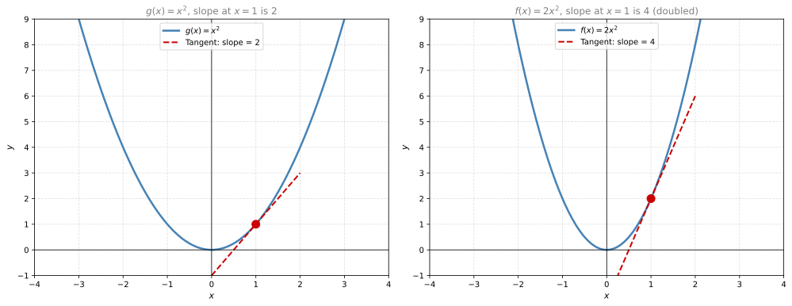
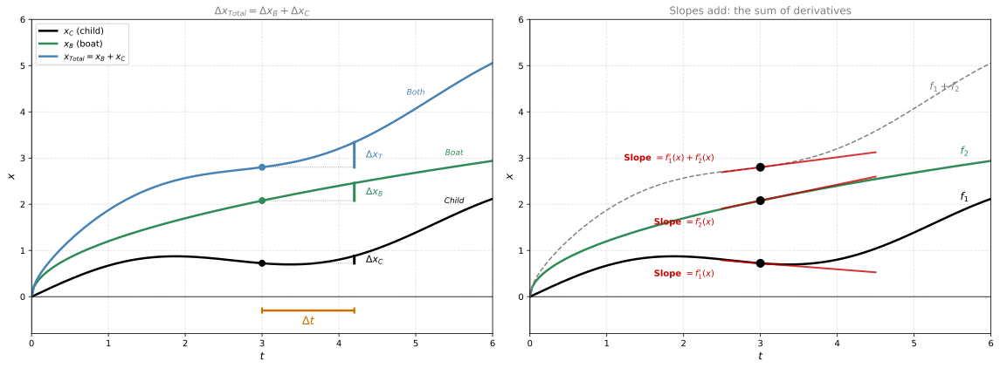
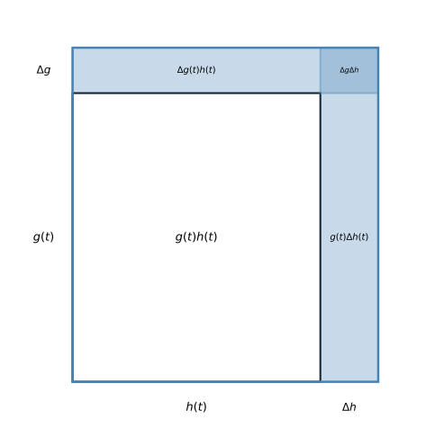
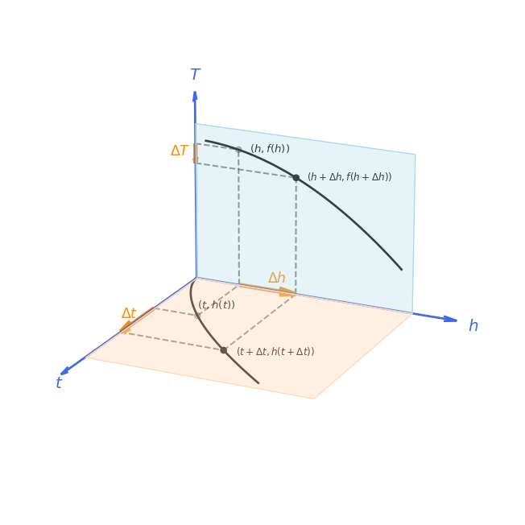
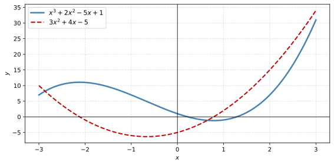
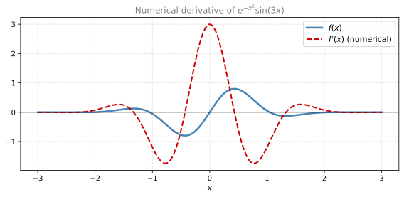

Derivative Rules
calculus
So far, you have learned derivatives of simple functions (constants, lines, polynomials, \(e^x\), \(\ln(x)\), \(\sin\), \(\cos\)). In order to find derivatives of more complicated functions, you need rules that let you build on the simple ones. The four rules are:
- Multiplication by a scalar
- The sum rule
- The product rule
- The chain rule
Multiplication by a Scalar
If \(f(x) = c \cdot g(x)\) where \(c\) is a constant, then:
\[ f'(x) = c \cdot g'(x) \]
Why does this work? Multiplying a function by \(c\) stretches it vertically by a factor of \(c\). The run (\(\Delta x\)) stays the same, but the rise (\(\Delta y\)) gets multiplied by \(c\). Since slope = rise / run, the slope also gets multiplied by \(c\).
Example: Consider \(f(x) = 2x^2\). This is just \(x^2\) stretched vertically by 2. Since the derivative of \(x^2\) is \(2x\), the derivative of \(2x^2\) is \(2 \cdot 2x = 4x\).
At \(x = 1\): the derivative of \(x^2\) is \(2(1) = 2\), and the derivative of \(2x^2\) is \(4(1) = 4\). The slope doubled because the function doubled.
Note
Scalar multiplication rule: \((c \cdot g)' = c \cdot g'\)
Sum Rule
If \(f(x) = g(x) + h(x)\), then:
\[ f'(x) = g'(x) + h'(x) \]
The boat analogy. Imagine a child running inside a moving boat. The boat moves a distance \(x_B\) and the child moves an additional distance \(x_C\) inside the boat (in the same direction). The total distance the child moves relative to the earth is \(x_{\text{total}} = x_B + x_C\).
What about velocities? If the boat’s speed is 0.6 m/s and the child runs at 0.05 m/s inside the boat, then the child’s speed relative to the earth is \(0.6 + 0.05 = 0.65\) m/s. Velocities add just like distances do.
That is the sum rule: if distances (functions) can be added, then velocities (derivatives) can also be added.
Why it works: For any interval \(\Delta x\), the total rise is \(\Delta g + \Delta h\), so:
\[ \frac{\Delta f}{\Delta x} = \frac{\Delta g + \Delta h}{\Delta x} = \frac{\Delta g}{\Delta x} + \frac{\Delta h}{\Delta x} \]
As \(\Delta x \to 0\), each fraction becomes the respective derivative.
Example: \(f(x) = x^2 + x^3\). Then \(f'(x) = 2x + 3x^2\).

Note
Sum rule: \((g + h)' = g' + h'\)
Product Rule
If \(f(x) = g(x) \cdot h(x)\), then:
\[ f'(x) = g'(x) \cdot h(x) + g(x) \cdot h'(x) \]
The hammer analogy. Think of taking the derivative as “hitting with a hammer.” To differentiate a product \(g \cdot h\), you hit \(g\) with the hammer (differentiate it) while leaving \(h\) alone, then hit \(h\) with the hammer while leaving \(g\) alone, and add the results.
The house-building analogy. Imagine two groups of workers building a house. One group builds the side wall (length \(g(t)\)) and the other builds the front wall (length \(h(t)\)). The area of the house at time \(t\) is:
\[ f(t) = g(t) \cdot h(t) \]
After a small time \(\Delta t\), the side grows by \(\Delta g\) and the front grows by \(\Delta h\). The new area consists of the original rectangle plus three new strips:
- A vertical strip: \(g(t) \cdot \Delta h\) (old side times new front growth)
- A horizontal strip: \(\Delta g \cdot h(t)\) (new side growth times old front)
- A tiny corner: \(\Delta g \cdot \Delta h\) (negligibly small)

The change in area (the blue-shaded region) is:
\[ \Delta f(t) = \Delta g(t) \cdot h(t) + g(t) \cdot \Delta h(t) + \Delta g(t) \cdot \Delta h(t) \]
Dividing by \(\Delta t\):
\[ \frac{\Delta f(t)}{\Delta t} = \frac{\Delta g(t)}{\Delta t} \cdot h(t) + g(t) \cdot \frac{\Delta h(t)}{\Delta t} + \frac{\Delta g(t) \cdot \Delta h(t)}{\Delta t} \]
As \(\Delta t \to 0\), the last term vanishes (it’s the product of two tiny quantities divided by only one), and we get:
\[ f'(t) = g'(t) \cdot h(t) + g(t) \cdot h'(t) \]
Note
Product rule: \((g \cdot h)' = g' \cdot h + g \cdot h'\)
Example: \(f(x) = x \cdot e^x\). Let \(g(x) = x\) and \(h(x) = e^x\). Then \(g'(x) = 1\) and \(h'(x) = e^x\), so:
\[ f'(x) = g'(x) \cdot h(x) + g(x) \cdot h'(x) = 1 \cdot e^x + x \cdot e^x = e^x + xe^x = e^x(1 + x) \]
Chain Rule
If you have a composition of functions \(f(x) = g(h(x))\), the chain rule tells you how to differentiate:
\[ \frac{df}{dx} = \frac{dg}{dh} \cdot \frac{dh}{dx} \]
In Lagrange notation:
\[ f'(x) = g'(h(x)) \cdot h'(x) \]
Notice the key detail: it’s \(g'\) evaluated at \(h(x)\), not at \(x\).
The mountain driving analogy. You drive up a mountain. As time passes, your height increases. As height increases, temperature decreases. The chain links are:
- \(\frac{dh}{dt}\) = how fast height changes with time (your driving speed uphill)
- \(\frac{dT}{dh}\) = how fast temperature changes with height (the lapse rate)
- \(\frac{dT}{dt}\) = how fast temperature changes with time (what you feel)

The chain rule says: a small change \(\Delta t\) in time causes a change \(\Delta h\) in height, which causes a change \(\Delta T\) in temperature:
\[ \Delta t \;\rightarrow\; \Delta h \;\rightarrow\; \Delta T \]
\[ \frac{\Delta T}{\Delta t} = \frac{\Delta T}{\Delta h} \cdot \frac{\Delta h}{\Delta t} \]
As \(\Delta t \to 0\):
\[ \frac{dT}{dt} = \frac{dT}{dh} \cdot \frac{dh}{dt} \]
This makes intuitive sense. If you climb 100 meters per minute (\(dh/dt = 100\)) and temperature drops 0.6 degrees per 100 meters (\(dT/dh = -0.006\)), then temperature drops at 0.6 degrees per minute (\(dT/dt = -0.006 \times 100 = -0.6\)).
Why is it called the chain rule? Because you can keep composing functions. If \(f = f_3(f_2(f_1(x)))\), then:
\[ \frac{d}{dt} f(g(h(t))) = \frac{df}{dg} \cdot \frac{dg}{dh} \cdot \frac{dh}{dt} \]
Each link in the chain contributes one factor. Notice how the intermediate variables cancel like fractions: \(\frac{df}{\cancel{dg}} \cdot \frac{\cancel{dg}}{\cancel{dh}} \cdot \frac{\cancel{dh}}{dt} = \frac{df}{dt}\).
Why it works: A small change \(\Delta x\) causes a small change \(\Delta h\) in the inner function. That \(\Delta h\) causes a small change \(\Delta g\) in the outer function. So:
\[ \frac{\Delta g}{\Delta x} = \frac{\Delta g}{\Delta h} \cdot \frac{\Delta h}{\Delta x} \]
As \(\Delta x \to 0\), both \(\Delta h \to 0\) and \(\Delta g \to 0\), giving us the derivative.
Note
Chain rule: If \(f(x) = g(h(x))\), then \(f'(x) = g'(h(x)) \cdot h'(x)\).
Example: \(f(x) = e^{x^2}\). This is \(g(h(x))\) where \(g(u) = e^u\) and \(h(x) = x^2\).
- \(g'(u) = e^u\), so \(g'(h(x)) = e^{x^2}\)
- \(h'(x) = 2x\)
Therefore:
\[ f'(x) = e^{x^2} \cdot 2x = 2x \, e^{x^2} \]
Example: \(f(x) = \sin(3x)\). This is \(g(h(x))\) where \(g(u) = \sin(u)\) and \(h(x) = 3x\).
- \(g'(u) = \cos(u)\), so \(g'(h(x)) = \cos(3x)\)
- \(h'(x) = 3\)
Therefore:
\[ f'(x) = \cos(3x) \cdot 3 = 3\cos(3x) \]
Review Questions
1. Use the scalar rule to find the derivative of \(f(x) = 7\sin(x)\).
TipAnswer
\(f'(x) = 7\cos(x)\). The constant 7 stays, and the derivative of \(\sin(x)\) is \(\cos(x)\).
2. Find the derivative of \(f(x) = x^3 + e^x\).
TipAnswer
Using the sum rule: \(f'(x) = 3x^2 + e^x\).
3. Find the derivative of \(f(x) = x^2 \cdot \ln(x)\).
TipAnswer
Using the product rule with \(g = x^2\) and \(h = \ln(x)\): \(f'(x) = 2x \cdot \ln(x) + x^2 \cdot \frac{1}{x} = 2x\ln(x) + x\).
4. Find the derivative of \(f(x) = (x^2 + 1)^5\).
TipAnswer
Using the chain rule with \(g(u) = u^5\) and \(h(x) = x^2 + 1\): \(f'(x) = 5(x^2 + 1)^4 \cdot 2x = 10x(x^2 + 1)^4\).
Lab: Differentiation in Python
Now that you know the derivative rules, let’s explore how to compute derivatives in Python using three different approaches: symbolic, numerical, and automatic differentiation. Each method has different strengths and trade-offs.
The idea is simple. You already know that for \(f(x) = x^2\), the derivative is \(f'(x) = 2x\). In Python you could write both by hand:
def f(x):
return x**2
def dfdx(x):
return 2*xBut for complex functions, writing derivatives by hand gets tedious and error-prone. That’s where these three tools come in: they compute derivatives for you, each in a different way.
Setup
Note
plot_f_and_deriv helper (expand to see implementation)
def plot_f_and_deriv(f, df, x_min=-3, x_max=3, label_f="f(x)", label_df="f'(x)"):
"""Plot a function and its derivative on the same axes."""
x = np.linspace(x_min, x_max, 200)
fig, ax = plt.subplots(figsize=(8, 4))
ax.plot(x, f(x), color='#4682B4', linewidth=2.5, label=label_f)
ax.plot(x, df(x), '--', color='#CC0000', linewidth=2, label=label_df)
ax.axhline(0, color='black', linewidth=0.8)
ax.axvline(0, color='black', linewidth=0.8)
ax.legend(fontsize=11)
ax.grid(True, linestyle='--', alpha=0.4)
ax.set_xlabel('$x$')
ax.set_ylabel('$y$')
plt.tight_layout()
plt.show()1. Symbolic Differentiation with SymPy
Symbolic differentiation gives you an exact closed-form expression for the derivative — just like working by hand, but automated. The Python library SymPy does this for you: you give it \(f(x) = x^3 + 2x^2 - 5x + 1\) and it returns \(f'(x) = 3x^2 + 4x - 5\).
First, declare x as a symbolic variable:
from sympy import symbols, diff, exp, sin, cos, lambdify, pprint
x = symbols('x')Now define a function symbolically and call diff() to differentiate. SymPy returns the exact derivative expression:
from IPython.display import display, Math
from sympy import latex
f_expr = x**3 + 2*x**2 - 5*x + 1
df_expr = diff(f_expr, x)
display(Math(r"f(x) = " + latex(f_expr)))
display(Math(r"f'(x) = " + latex(df_expr)))\(\displaystyle f(x) = x^{3} + 2 x^{2} - 5 x + 1\)
\(\displaystyle f'(x) = 3 x^{2} + 4 x - 5\)
SymPy applies the sum, product, and chain rules automatically. Here’s a product of \(x^2\) and \(\sin(3x)\), which requires both the product rule and the chain rule:
# Product rule + chain rule
g_expr = x**2 * sin(3*x)
dg_expr = diff(g_expr, x)
display(Math(r"g(x) = " + latex(g_expr)))
display(Math(r"g'(x) = " + latex(dg_expr)))\(\displaystyle g(x) = x^{2} \sin{\left(3 x \right)}\)
\(\displaystyle g'(x) = 3 x^{2} \cos{\left(3 x \right)} + 2 x \sin{\left(3 x \right)}\)
To evaluate these symbolic expressions at numeric points (e.g., for plotting), convert them to NumPy-compatible functions with lambdify. Below, we plot \(f(x)\) (blue) and \(f'(x)\) (red dashed). Notice how \(f'(x) = 0\) exactly where \(f(x)\) has its peaks/valleys:
f_numpy = lambdify(x, f_expr, 'numpy')
df_numpy = lambdify(x, df_expr, 'numpy')
plot_f_and_deriv(f_numpy, df_numpy, label_f="$x^3 + 2x^2 - 5x + 1$", label_df="$3x^2 + 4x - 5$")
Note
When to use symbolic differentiation: When you need an exact, human-readable formula. Ideal for small expressions, verifying hand calculations, or generating code for other systems.
Limitation: Symbolic differentiation can produce expressions that grow exponentially large for complex nested functions, making it slow for deeply composed functions.
2. Numerical Differentiation with NumPy
What if you don’t have a symbolic formula? Maybe your function is a black box (e.g., output from a simulation). Numerical differentiation approximates the derivative using the limit definition directly:
\[ f'(x) \approx \frac{f(x + \Delta x) - f(x - \Delta x)}{2 \Delta x} \]
This is the central difference formula. You pick a tiny \(\Delta x\) (like \(10^{-7}\)), evaluate \(f\) at two nearby points, and divide. No algebra needed.
def numerical_derivative(f, x, dx=1e-7):
"""Compute f'(x) using central differences."""
return (f(x + dx) - f(x - dx)) / (2 * dx)Let’s test it on \(f(x) = x^3 + 2x^2 - 5x + 1\), where we already know \(f'(x) = 3x^2 + 4x - 5\). At \(x = 2\), the exact answer is \(3(4) + 4(2) - 5 = 15\):
def f_poly(x):
return x**3 + 2*x**2 - 5*x + 1
# Compare at x = 2
exact = 3*(2**2) + 4*2 - 5 # = 15
approx = numerical_derivative(f_poly, 2.0)
print(f"Exact derivative at x=2: {exact}")
print(f"Numerical approximation: {approx:.10f}")
print(f"Error: {abs(exact - approx):.2e}")Exact derivative at x=2: 15
Numerical approximation: 14.9999999888
Error: 1.12e-08The error is tiny (around \(10^{-7}\)). The numerical method works on any function you can evaluate, even one with no closed-form derivative. Here we differentiate \(f(x) = e^{-x^2}\sin(3x)\) at 200 points and plot the result:
def mystery(x):
return np.exp(-x**2) * np.sin(3*x)
x_vals = np.linspace(-3, 3, 200)
df_numerical = np.array([numerical_derivative(mystery, xi) for xi in x_vals])
fig, ax = plt.subplots(figsize=(8, 4))
ax.plot(x_vals, mystery(x_vals), color='#4682B4', linewidth=2.5, label='$f(x)$')
ax.plot(x_vals, df_numerical, '--', color='#CC0000', linewidth=2, label="$f'(x)$ (numerical)")
ax.axhline(0, color='black', linewidth=0.8)
ax.legend(fontsize=11)
ax.grid(True, linestyle='--', alpha=0.4)
ax.set_xlabel('$x$')
ax.set_title('Numerical derivative of $e^{-x^2}\\sin(3x)$', fontsize=12, color='gray')
plt.tight_layout()
plt.show()
Note
When to use numerical differentiation: When you only have a function you can evaluate (no symbolic formula), or for quick-and-dirty checks. Works for any smooth function.
Limitations:
- Choosing \(\Delta x\) too small introduces floating-point rounding errors; too large gives a bad approximation.
- Scales poorly: for a function \(f: \mathbb{R}^n \to \mathbb{R}\), computing the gradient requires \(O(n)\) function evaluations.
3. Automatic Differentiation with JAX
Automatic differentiation (autodiff) is neither symbolic nor numerical. It computes exact derivatives (to machine precision) by decomposing the function into elementary operations and applying the chain rule step by step during execution. No formula explosion (unlike SymPy), no approximation error (unlike NumPy).
This is the engine behind modern deep learning. We’ll use JAX, Google’s autodiff library. The key function is jax.grad(f), which takes any Python function and returns a new function that computes the derivative.
import jax
import jax.numpy as jnp
# JAX uses its own numpy-like API
def f_jax(x):
return x**3 + 2*x**2 - 5*x + 1
# jax.grad returns a *function* that computes the derivative
df_jax = jax.grad(f_jax)
print(f"f'(2.0) = {df_jax(2.0)}")f'(2.0) = 15.0The answer is 15.0, matching our exact calculation. JAX handles composed functions effortlessly, no matter how nested:
def composed(x):
return jnp.exp(-x**2) * jnp.sin(3*x)
d_composed = jax.grad(composed)
# Evaluate derivative at several points
x_test = jnp.array([0.0, 1.0, -1.0, 2.0])
for xi in x_test:
print(f" f'({xi:.1f}) = {d_composed(xi):.6f}") f'(0.0) = 3.000000
f'(1.0) = -1.196424
f'(-1.0) = -1.196424
f'(2.0) = 0.073229JAX can even compute higher-order derivatives by composing grad on itself. Since grad returns a function, you can take the gradient of that function:
# Second derivative
d2f_jax = jax.grad(jax.grad(f_jax))
# Third derivative
d3f_jax = jax.grad(jax.grad(jax.grad(f_jax)))
print(f"f(x) = x³ + 2x² - 5x + 1")
print(f"f'(1.0) = {df_jax(1.0)}") # 3 + 4 - 5 = 2
print(f"f''(1.0) = {d2f_jax(1.0)}") # 6 + 4 = 10
print(f"f'''(1.0) = {d3f_jax(1.0)}") # 6f(x) = x³ + 2x² - 5x + 1
f'(1.0) = 2.0
f''(1.0) = 10.0
f'''(1.0) = 6.0These match what you’d get by hand: \(f'(x) = 3x^2 + 4x - 5\), so \(f'(1) = 2\). Then \(f''(x) = 6x + 4\), so \(f''(1) = 10\). And \(f'''(x) = 6\) everywhere.
Note
When to use automatic differentiation: When you need exact gradients of complex programs (neural networks, physics simulations, optimization). It’s fast, exact, and scales to millions of parameters.
4. Comparison
All three methods give you the derivative, but they differ in accuracy, speed, and how far they can scale. Let’s put them side by side on the same function and measure:
import time
def f_compare(x):
return np.exp(-x**2) * np.sin(3*x)
# SymPy
x_sym = symbols('x')
f_sym_expr = exp(-x_sym**2) * sin(3*x_sym)
df_sym_expr = diff(f_sym_expr, x_sym)
df_sym_numpy = lambdify(x_sym, df_sym_expr, 'numpy')
# Test point
x0 = 1.5
# SymPy (exact symbolic → numeric)
t0 = time.perf_counter()
for _ in range(1000):
val_sympy = df_sym_numpy(x0)
t_sympy = time.perf_counter() - t0
# NumPy (numerical)
t0 = time.perf_counter()
for _ in range(1000):
val_numpy = numerical_derivative(f_compare, x0)
t_numpy = time.perf_counter() - t0
# JAX (automatic)
def f_jax_compare(x):
return jnp.exp(-x**2) * jnp.sin(3*x)
df_jax_compare = jax.grad(f_jax_compare)
_ = df_jax_compare(1.0) # warm up JIT
t0 = time.perf_counter()
for _ in range(1000):
val_jax = df_jax_compare(x0)
t_jax = time.perf_counter() - t0
print(f"{'Method':<15} {'Value':<20} {'Time (1000 calls)'}")
print(f"{'-'*55}")
print(f"{'SymPy':<15} {val_sympy:<20.10f} {t_sympy*1000:.2f} ms")
print(f"{'NumPy':<15} {val_numpy:<20.10f} {t_numpy*1000:.2f} ms")
print(f"{'JAX':<15} {float(val_jax):<20.10f} {t_jax*1000:.2f} ms")Method Value Time (1000 calls)
-------------------------------------------------------
SymPy 0.2424396078 0.52 ms
NumPy 0.2424396080 0.53 ms
JAX 0.2424395978 851.37 ms| Method | Exact? | Scalable? | Best for |
|---|---|---|---|
| Symbolic (SymPy) | ✅ Yes | ❌ Blows up for complex expressions | Small formulas, verification |
| Numerical (NumPy) | ❌ Approximate | ❌ \(O(n)\) evaluations for gradient | Quick checks, black-box functions |
| Automatic (JAX) | ✅ Yes (machine precision) | ✅ Scales to millions of params | ML, optimization, research |
Note
Why is JAX slow above? In the scalar benchmark, Python dispatch overhead dominates. JAX is designed for batched computation with JIT compilation. The comparison below shows what happens at scale: computing the gradient of a function with 1000 parameters.
# --- Realistic comparison: gradient of 1000 parameters ---
n_params = 1000
# The function: sum of sin²(x_i) — a toy loss function
def loss_numpy(params):
return np.sum(np.sin(params) ** 2)
params_np = np.ones(n_params)
params_jax = jnp.ones(n_params)
# --- SymPy symbolic gradient ---
from sympy import sin as sym_sin, Matrix, symbols as sym_symbols
sym_params = sym_symbols(f'x0:{n_params}')
loss_sym_expr = sum(sym_sin(p)**2 for p in sym_params)
t0 = time.perf_counter()
grad_sym = [diff(loss_sym_expr, p) for p in sym_params]
t_sympy_grad = time.perf_counter() - t0
# --- NumPy numerical gradient (central differences, one param at a time) ---
def numerical_gradient(f, params, dx=1e-7):
grad = np.zeros_like(params)
for i in range(len(params)):
params_plus = params.copy()
params_minus = params.copy()
params_plus[i] += dx
params_minus[i] -= dx
grad[i] = (f(params_plus) - f(params_minus)) / (2 * dx)
return grad
t0 = time.perf_counter()
for _ in range(10):
g_numpy = numerical_gradient(loss_numpy, params_np)
t_numpy_grad = (time.perf_counter() - t0) / 10
# --- JAX autodiff (JIT-compiled) ---
@jax.jit
def loss_jax(params):
return jnp.sum(jnp.sin(params) ** 2)
grad_loss_jax = jax.jit(jax.grad(loss_jax))
_ = grad_loss_jax(params_jax).block_until_ready() # warm up
t0 = time.perf_counter()
for _ in range(1000):
g_jax = grad_loss_jax(params_jax).block_until_ready()
t_jax_grad = (time.perf_counter() - t0) / 1000
print(f"Gradient of {n_params} parameters:")
print(f" SymPy (symbolic): {t_sympy_grad*1000:.1f} ms (builds {n_params} derivative expressions)")
print(f" NumPy (numerical): {t_numpy_grad*1000:.2f} ms (needs 2×{n_params} function evaluations)")
print(f" JAX (autodiff+JIT): {t_jax_grad*1000:.4f} ms (one forward + backward pass)")Gradient of 1000 parameters:
SymPy (symbolic): 7490.0 ms (builds 1000 derivative expressions)
NumPy (numerical): 9.00 ms (needs 2×1000 function evaluations)
JAX (autodiff+JIT): 0.0244 ms (one forward + backward pass)At 1000 parameters, JAX is orders of magnitude faster because it computes all 1000 partial derivatives in a single backward pass. SymPy has to build and simplify 1000 separate symbolic expressions (and this is just the construction cost, before evaluation). NumPy numerical differentiation needs 2000 function evaluations (two per parameter). This gap only widens as the number of parameters grows, which is why autodiff is the backbone of deep learning.
Lab Exercises
1. Use SymPy to find the derivative of \(f(x) = \ln(x) \cdot e^{2x}\) and verify using the product rule by hand.
TipAnswer
from sympy import symbols, diff, exp, ln
x = symbols('x')
f = ln(x) * exp(2*x)
print(diff(f, x)) # exp(2*x)/x + 2*exp(2*x)*ln(x)By hand: \(g = \ln(x)\), \(h = e^{2x}\), so \(f' = \frac{1}{x} e^{2x} + \ln(x) \cdot 2e^{2x} = e^{2x}\left(\frac{1}{x} + 2\ln(x)\right)\).
2. Write a function that computes the numerical second derivative using central differences. Test it on \(f(x) = \sin(x)\) at \(x = \pi/4\).
TipAnswer
def numerical_second_derivative(f, x, dx=1e-5):
return (f(x + dx) - 2*f(x) + f(x - dx)) / dx**2
import numpy as np
val = numerical_second_derivative(np.sin, np.pi/4)
print(f"Numerical: {val:.8f}")
print(f"Exact: {-np.sin(np.pi/4):.8f}") # f''(x) = -sin(x)3. Use jax.grad to compute the derivative of \(f(x) = \tanh(x^2 + 1)\) at \(x = 0, 1, 2\). Compare against the hand-derived formula.
TipAnswer
import jax
import jax.numpy as jnp
def f(x):
return jnp.tanh(x**2 + 1)
df = jax.grad(f)
for x0 in [0.0, 1.0, 2.0]:
print(f"f'({x0}) = {df(x0):.6f}")By chain rule: \(f'(x) = \text{sech}^2(x^2 + 1) \cdot 2x = \frac{2x}{\cosh^2(x^2+1)}\).
At \(x=0\): \(f'(0) = 0\) (since the \(2x\) factor is zero).
Previous: Derivatives of Basic Functions | Next: Optimization